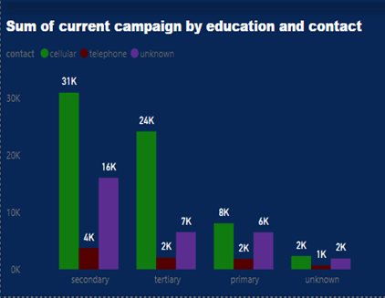

Impact of Bank Marketing Campaigns on Customer Behaviour
One method a bank generates income is by engaging in term deposits.
These involve customers investing cash in financial institutions for a
specified duration. Term deposit investments typically have short-term maturities,
spanning from one month to a few years and will have varying levels of required
minimum deposits. They can either be an interest-bearing bank account that has a
pre-set date of maturity or a certificate of deposit (CD) whereby the money must
remain in the account for the fixed term in order to earn the stated interest rate.
The banks via marketing campaigns have various outreach plans to sell their products
and services to the customers. The method of reaching out in this article is through
emailing, advertising, digital marketing, and telephoning.
The Data
The data is related to the direct marketing campaigns of a Portuguese banking institution. The marketing campaigns were based on phone calls. Often, more than one contact to the same client was required, in order to access if the product (bank term deposit) would be ('yes') or not ('no') subscribed by the customer or not. It consists of 45,211 rows and 18 columns ordered by date (from May 2008 to November 2010).This dataset is publicly available for research. It has been picked up from the UCI Machine Learning with random sampling and a few additional columns.
This data is made public by S. Moro, P. Cortez and P. Rita. in S. Moro, P. Cortez and P. Rita. A Data-Driven Approach to Predict the Success of Bank Telemarketing. Decision Support Systems, Elsevier, 62:22-31, June 2014.
Here are some questions to serve as a guide in this article
- Find out the best and effective way to reach out to customers
- To identify the customers most likely to save. Knowing these people beforehand will help direct the resources towards them since the process is very expensive.
- In which month was the campaign most effective?
Key Insights
- The campaigns were most effective in the (summer) May, June, July and August with the best month being July. To enhance the campaign's effectiveness, it is advisable to concentrate on this period, as it has demonstrated a significant acceptance rate.
- Those at the management, blue collar, technicians and administrators’ level had the most bank balance with a total of 17, 10, 10, and 6 million euros respectively and their ages range from 30 to 59. The average bank balance is 5million. The more savings an individual had in the account, the more likely he or she will say yes to the campaign. The ages between 30 to 39 proved to have the maximum saved amount.
- The most effective way of contact was via the mobile phone with the amount saved at 3 million euros.
- Those who said yes or subscribed to the campaign were married and their educational background ranged from secondary to tertiary levels. Identifying the customers helps tailor the products and services directly to fulfil their needs.
Analysis
I started my analysis by determining which method is best to reach out to customers. The data shows that the most effective means was direct communication on cellular (mobile phones) despite the fact that other methods of campaigning were also used.The paired graphs illustrate instances where contacted customers responded affirmatively and negatively to the campaign. Positioned side by side, they facilitate easy comparison.
Best means to contact customers
Yes
No
May stood out as the month with the most significant impact. From this observation, it can be inferred that the summer period generated more favourable outcomes. Conversely, it was observed that December had the least impact among the months.
Which months generated more
Yes
No
Whom should the bank focus its resources on?
The tree map illustrates that, customers having a secondary or tertiary educational background constitute the majority of high-earning individuals. A significant portion in this educational category responded positively to the campaign. This is evident from the two tree maps clearly portraying the outcome.
Sum of balance by education and marital status
Yes
No
I aimed to identify those who exhibited the highest response to the campaign. The majority of respondents had attained secondary or tertiary education and were married. Conversely, individuals who were single or divorced and had primary education displayed the least impact.
Yes
No
Individuals in managerial positions accumulated a net sum of saved income approximately 17 million euros higher than their counterparts in other job titles. On average, the combined saved amount across all job titles was 5 million euros.
Bank balance by age
I also endeavoured to identify the age group with the highest accumulated savings. It turned out that individuals aged 30-39 had the greatest savings, and it's noteworthy that some of them hold managerial positions.
Yes
No
Sum of current campaign by education and contact
Despite the numerous modes of contact available, cellular or mobile phones proved to be the most effective across all educational levels. The other methods of contact combined were unclassified and labelled as unknown.
Yes
No

Below are the two dashboards with all the visuals.
Yes
No
Thank you for taking the time to read this article. Your feedback and comments for potential enhancements would be greatly appreciated.